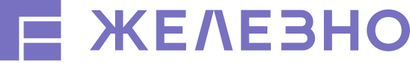
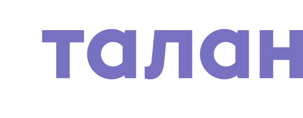
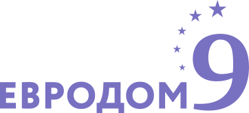
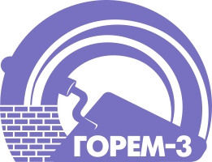
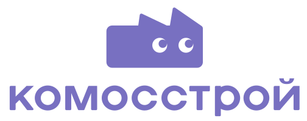

3D визуализации
Фотореалистичная визуализация, моделирование архитектуры и окружения, атмосферные рендеры, 3D-проектирование и создание контента для отдела продаж.
Визуальные проекты для ведущих компаний рынка недвижимости.
Синтез творческого подхода и безупречного технического исполнения. Полный визуальный контент архитектурного объекта в одной студии.
Фотореалистичная визуализация, моделирование архитектуры и окружения, атмосферные рендеры, 3D-проектирование и создание контента для отдела продаж.
Сюжетные короткометражные фильмы и рекламные ролики. Организация съёмочного процесса. Интеграция натурных и персонажных кадров в 3D-сцену.
Иммерсивные 3D-панорамы, разработка сценариев, интеграция натурных съёмок с хромакеем и 3D-графики.
От разработки бренда и визуального образа до создания контента для онлайн и офлайн-носителей. Отражение мировых трендов и внедрение собственных ноу-хау.
Студия премиум-класса с 2024 года. Специализируемся на объёмной реалистичной графике, 3D-анимации и полном визуальном контенте архитектурных объектов.
Мы создаём сильные истории для глубокого погружения в виртуальную реальность.
Знаем специфику рынка недвижимости и то, что должен показать кадр, чтобы лот продавался.
У каждого проекта есть продюсер, который обеспечивает сроки и коммуникацию.
Время это деньги. Мы планируем производство так, чтобы успеть к вашему событию.
Объём и детализация подбираются под задачу, а стоимость фиксируется до старта.





Это видео, которое динамично проводит зрителя по объекту, показывая его в движении, со сменой ракурсов, света и, часто, сюжетом.
Восприятие. Рендер это фотография, анимация это короткометражный фильм.
Информативность. Статика показывает ключевой кадр. Анимация раскрывает всю концепцию пространства, его логику и атмосферу.
Эффект. Рендер позволяет рассмотреть детали. Анимация вызывает эмоции и полное погружение, так как добавляет фактор времени.
Исходники. Архитектурная модель в 3ds Max, Revit, SketchUp или аналогичном формате, планы, фасады, ведомости отделок.
Техническое задание. Главная задача ролика, сроки и аудитория, ключевые преимущества проекта, главное сообщение зрителю, портрет клиента, возможные возражения, обязательные к показу элементы и то, чего стоит избегать.
Референсы. Примеры анимаций или фильмов, которые передают нужную вам атмосферу, монтаж или стиль.
Чем точнее ответы, тем эффективнее результат. Это на 50% экономит время и бюджет.
Да. На стадии выбора ракурсов правки вносятся любое количество раз, до получения нужного результата. После создания проработанных изображений доступны до двух итераций корректировок.
Стоимость рассчитывается индивидуально, после брифа и консультации.
Итоговая сумма зависит от полноты первичной информации и технического задания, объёма работ, сложности моделируемых помещений, количества текстур и объектов, количества итоговых изображений, разрешения, разнообразия ракурсов и уровня детализации.
Мы поможем вам показать будущее уже сегодня. Ответим в рабочие часы по московскому времени.